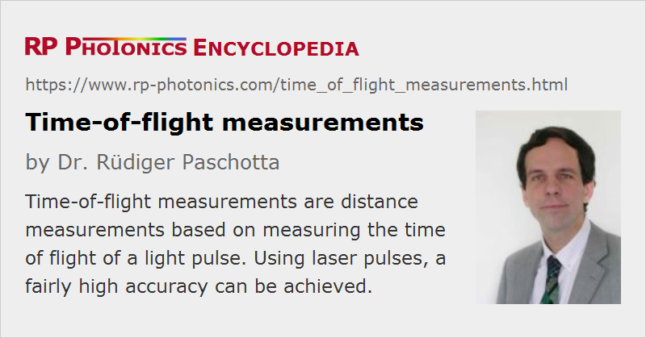

Time-of-flight Measurements
Definition: distance measurements based on measuring the time of flight of a light pulse
German: Laufzeitmessungen
Categories: optical metrology, light pulses, methods
How to cite the article; suggest additional literature
Author: Dr. Rüdiger Paschotta
Time-of-flight measurements are often used for the measurement of some distance, e.g. with a laser rangefinder, used e.g. in an airplane, possibly in the form of a scanning laser radar. Here, an apparatus sends out a short optical pulse and measures the time until a reflected portion of the pulse is monitored. The distance is then calculated as half the measured round-trip time divided by the velocity of light. Due to this high velocity, the temporal accuracy must be very high – e.g. 1 ns for a spatial accuracy of 15 cm.
A related method is the phase shift method for distance measurements. Here, a continuously modulated signal instead of separated pulses is used.
The time-of-flight method is typically used for large distances such as hundreds of meters or many kilometers. Using advanced techniques (involving high-quality telescopes, highly sensitive photodetection, etc.), it is possible to measure e.g. the distance between the Earth and the Moon with an accuracy of a few centimeters, or to obtain a precise profile of a dam. Typical accuracies of simple devices for short distances are a few millimeters or centimeters.
For a much higher spatial resolution, ultrashort pulses can be used, e.g. from a femtosecond laser. However, fast photodetectors (usually photodiodes) are limited in resolution at least to the picosecond region. Femtosecond temporal resolutions require all-optical techniques such as measuring optical cross-correlations.
As time-of-flight measurements are preferentially used for large distances, the beam quality of the laser source is crucial. In addition, a telescope can be used to obtain a large beam diameter and an accordingly increased Rayleigh length, i.e. a small beam divergence. The target can be equipped with a retroreflector in order to increase the amount of reflected light. The pulse duration used is usually between 100 ps and a few tens of nanoseconds, as achieved with a Q-switched laser. For large distances, high pulse energies are required. This can raise laser safety issues, particularly if the laser wavelength is not in the eye-safe region. For nanojoule to microjoule pulse energies (as required for moderate distances), it is possible to use a passively Q-switched microchip Er:Yb:glass laser, which can generate fairly short pulses (duration of the order of 1 ns) with pulse energies around 10 μJ in the eye-safe spectral region.
Suppliers
The RP Photonics Buyer's Guide contains 10 suppliers for time-of-flight measurement devices. Among them:
Questions and Comments from Users
Here you can submit questions and comments. As far as they get accepted by the author, they will appear above this paragraph together with the author’s answer. The author will decide on acceptance based on certain criteria. Essentially, the issue must be of sufficiently broad interest.
Please do not enter personal data here; we would otherwise delete it soon. (See also our privacy declaration.) If you wish to receive personal feedback or consultancy from the author, please contact him e.g. via e-mail.
By submitting the information, you give your consent to the potential publication of your inputs on our website according to our rules. (If you later retract your consent, we will delete those inputs.) As your inputs are first reviewed by the author, they may be published with some delay.
Bibliography
| [1] | M.-C. Amann et al., “Laser ranging: a critical review of usual techniques for distance measurement”, Opt. Eng. 40 (1), 10 (2001), doi:10.1117/1.1330700 |
See also: distance measurements with lasers, laser rangefinders, phase shift method for distance measurements
and other articles in the categories optical metrology, light pulses, methods
|  |
If you like this page, please share the link with your friends and colleagues, e.g. via social media:
These sharing buttons are implemented in a privacy-friendly way!